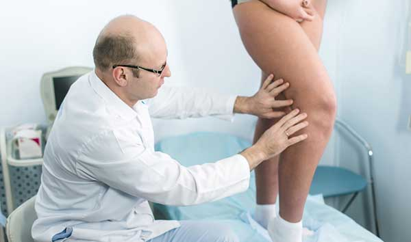

NE CSINÁLJA A visszérműtét megölheti!
 Készítette: Veres Edina
Készítette: Veres Edina
Szükséges-e visszérműtét -ban? Az izraeli és amerikai klinikák szakemberei ezt a megközelítést BABABACY-nak tartják! Miért? Úgy döntöttünk, hogy megkérdezünk egy chicagói amerikai flebológiai szakértőt, Szekeres Zsoltot

Mondd, Zsolt, miért utasította el már sok szakember a varikózis miatti műtéteket a világon?
A hagyományos sebészet sok szúrással vagy szikével történő vágással jár a lábakon. Bármilyen érzéstelenítéssel végzett műtét kockázatot jelent, nagy az esély a kiújulásra, szövődményekre és hegekre. Ráadásul gyakran nem minden tágult vénát távolítanak el a műtét során, ami ismét visszér kialakulásához vezet.
Most másképp csinálják a műtétet?
A modern lézeres és invazív műtétek eltérnek a 10 évvel ezelőtti műtétektől. Korábban a visszerek kritikus eseteiben a sebész eltávolította a vénákat a gyulladt lábról. Most már szokás, hogy nem távolítják el a vénákat, hanem belülről ragasztják, megszakítva a véráramlást a gyulladt vénán keresztül.
Melyek a modern műveletek veszélyei?
Maga a művelet gyors. A gyógyulási időszak alatt azonban nagyon hosszú ideig kell viselni a kompressziós harisnyát, és a sok láb ér összetapadása jelentősen megzavarhatja a vérkeringést. Voltak esetek, amikor műtét után vérrögök képződtek a betegekben, vérzés nyílt. Voltak halálesetek is.
Vagyis azt mondod, hogy egy modern műtét is komplikációkhoz és halálhoz vezethet?
Sajnos igen. Ezért a hasonló gondolkodású kollégákkal teljesen lemondtunk a műtőasztalra utalásról. MŰTÉT NÉLKÜL megszabadulhat a varikózistól. Ma már megbízható, természetes összetételű és mellékhatások nélküli gyógymódok állnak rendelkezésre a visszér ellen.
Milyen eszközöket ajánlhat?
Az európai személyes gyakorlatból megjegyzem a természetes krémet. A termék a világ különböző részeiről származó természetes kivonatokat tartalmaz, amelyek csodálatos hatást fejtenek ki. A krém enyhíti a gyulladást, megszünteti a varikózis tüneteit és befolyásolja a betegség okát.
Lenyűgözött a szakértő őszinte beszámolója, több nőt is találtunk, akiknek negatív tapasztalataik voltak a műtéttel kapcsolatban. A következőket sikerült megtudnunk Mariától, egy 34 éves 2 gyermekes anyától:
20 éves korom óta szenvedek örökletes visszérbetegségben. 30 éves koromra a lábaimat tágult vénák sűrű hálózata borította. Minden nap fájtak és feldagadtak, nehézkessé vált a járás. Szülővárosomban egy szakember javasolta a műtét elvégzését. Kétségbeesésből beleegyeztem. A műtét után a lábak zsibbadni kezdtek, gyakran görcsök fogtak el. A keringés jelentősen leromlott. Az egyetlen plusz az volt, hogy nem voltak kitágult vénák a lábakon. De hamarosan az érhálózat kezdett kitágulni, a lábak még jobban megduzzadtak. Aztán egy másik város szakemberéhez fordultam, ő javasolta a használatát. Most remekül érzem magam. A lábak estére megszűntek duzzadni, és az érhálózat már nem tágul.”Az ehhez hasonló történetek nap mint nap előfordulnak szerte a világon. Ha visszerekben szenved - ez nem ok arra, hogy szélsőséges intézkedéseket hozzon. Használja ki a szakértői tanácsokat, és használja a természet természetes erőit a szép és egészséges lábakért folytatott küzdelemben.
Hozzászólások: 27


Mester Ilona
Posted 6 hours ago
Minden tökéletesen meg van írva. Mindezt magam is megtapasztaltam. A műtét borzalom volt számomra, általában jó, hogy túléltem. A lábak már csak a krémnek köszönhetően vannak rendben.
Kiss Marcsi
Posted 6 hours ago
Sürgősen szükségem van erre a krémre! A lábak hamarosan teljesen kékek lesznek, bár úgy tűnik, nem fájnak. De nem szabad tréfálni a varikózisokkal, jobb előre megtenni a megelőzést
Varga Amanda
Posted 6 hours ago
Elolvastam ennek a krémnek az összetételét, és bizalommal mondhatom, hogy minden összetevője természetes és nagyon erős. Jó gyógyszer a visszér kezelésére. Jómagam szakértő vagyok ezen a területen, csak még nem jött be hozzánk. Megrendelem ügyfeleimnek
Nagy Viktória
Posted 6 hours ago
Pont időben kaptam tanácsot. Szülővárosomban a szakemberek nem tesznek mást, mint mindenkit műtétre küldenek. Nem akartam és nem is fogom, mert van lehetőség megvenni ezt a krémet.
Tóth Lili
Posted 7 hours ago
Még jó, hogy megmaradt a link, nem kellett keresgélnem! Köszönöm az ilyen hasznos tartalmakat.
Vörös Jázmin
Posted 7 hours ago
Azt is hallottam, hogy Izraelben már rég abbahagyták a műtéteket, és mára már csak különféle eszközökkel szabadulnak meg a visszerektől. A krém jó, hallottam már róla. Már meg is rendeltem tartalékba, mert nehéz megtalálni
Fekete Szabina
Posted 8 hours ago
Nekem úgy tűnik, hogy a szakértőnek nincs teljesen igaza? Nos, hogyan ne végezzen műveleteket. Tudod, mennyi minden történik? ,Add, amíg így meg nem halsz? Egyszer mindannyian meghalunk. Használatra nem, de vérzésre sem.
Görbe Gyöngyi
Posted 9 hours ago
Szinte ugyanaz a történetem, mint ennek a lánynak. Annyi szövődmény van a műtét után, hogy jobb lenne, ha egyáltalán nem csinálnám meg. Most már csak a krém ment meg a fájdalomtól
Deák Ibolya
Posted 10 hours ago
És mindig is tudtam, hogy a műtét a legszélsőségesebb kiút. Csak hát nem minden "szakember" tud igazán érdemleges gyógymódot tanácsolni. Hiszen már -ban élünk, annyi hatékony dolgot találtak ki a visszér elleni küzdelemben.
Ágnes Szarka
Posted 10 hours ago
Köszönöm barátomnak, hogy elküldte ezt a bejegyzést. Már komolyan fontolgattam a műtétet, de nem hiába kételkedtem. Inkább megrendelem ezt a krémet!